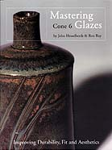

| Mastering Cone 6 Glazes
by John Hesselberth & Ron Roy
> Next
It may not be well known, but I have been an advocate of mid-fire
clays and glazes since my first experiments in this range during
college days, so it was with particular pleasure that I received
a copy of John Hesselberth's & Ron Roy's "Mastering Cone
6 Glazes".
The subtitle to this publication is "Improving Durability,
Fit and Aesthetics" and it certainly delivers on the first
two points at least.
Now
I admit that I am not a great glaze technician. I have been one
of those potters happy to try out glaze recipes from various sources
and modifying them to my needs. However, this is a 'hit and miss'
method that may or may not yield good results as far as glaze fit
is concerned and gives no information on durability and food safety
of a glaze. This is where Mastering Cone 6 Glazes comes in.
Few glazes, even fully melted, high gloss glazes in the mid-fire
range are food safe. They may not stand the test of time in this
respect, nor as far as durability goes. Over time and through contact
with food acids such as juices or vinegar, glaze components may
leach from the glaze, slowly accumulating in the body and possibly
eventually contributing to disease. As potters, we should bear responsibility
for the products we make and the trusting consumer buys from us.
Here is a case in point. Very recently a friend of mine asked me
to reproduce a mug he had bought from a Swedish potter some time
ago. It had what I suspect to be a barium or zinc matt glaze on
it. I was aghast to see that all color had leached from the
interior, after years of use. The outside was a beautiful matt blue,
but the inside, underneath tea and coffee stains, was a dirty cream
color. I told my friend to immediately stop using those mugs, to
contact the potter responsible and tell him that his glaze was probably
a health hazard.
Mastering Cone 6 Glazes explains why glaze components leach,
which ones are hazardous, how to test for leaching and what to do
about it. With the help of Glaze
Calculation Programs and Seger Formulas, glaze stability
and fit can be improved to an acceptable level.
Another issue is resistance to scratching, knife marking, chipping
and microwaving. Some glazes will only show such wear after months
of use. How to test for such durability issues? As it turns out,
methods for improving glaze stability will often also improve durability
and glaze fit.
The authors present 4 Rules for Stable Glaze Fit, which
if followed will help considerably to formulate a stable glaze.
They also offer a further 3 Guidelines, which will also improve
glaze characteristics. (Maybe the book could have been called "Zen
and the Art of Mastering Cone 6 Glazes"?  ) )
> Next
More Reviews
|